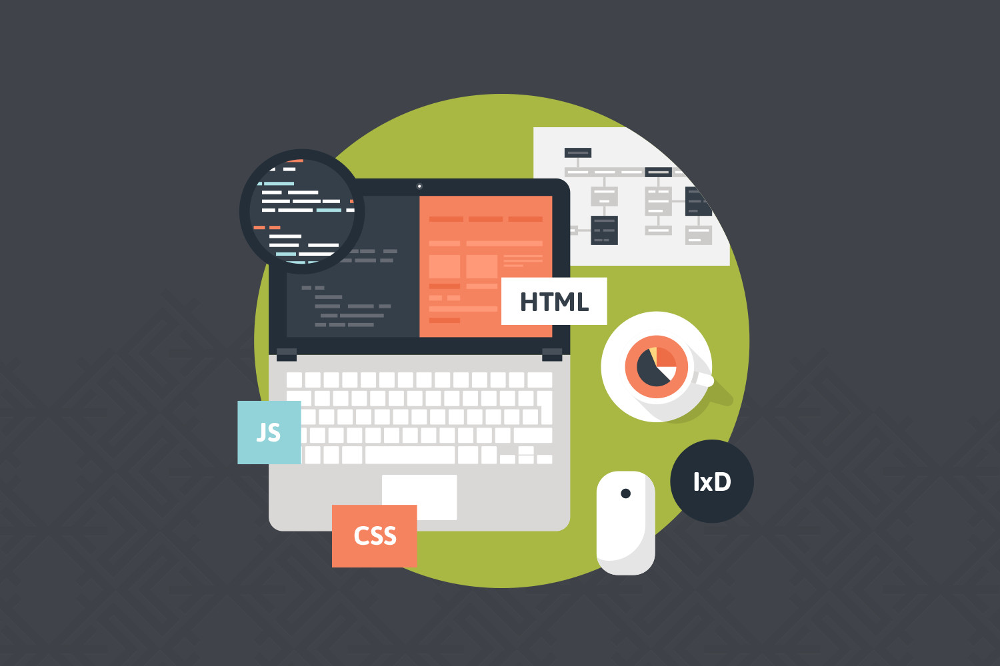

Front-end
aplicação que interage diretamente com o usuário
A Web é a plataforma de programação mais importante do mundo. Suas tecnologias principais, o HTML, o CSS e o JavaScript, são as linguagens mais usadas. E quem domina essas tecnologias, suas boas práticas e seus recursos mais avançados, hoje é um(a) disputado(a) Engenheiro(a) Front-end. Praticamente todo produto digital precisa de um Front-end Web, por isso é um mercado imenso no Brasil e no mundo. Mas se engana quem acha que aprender um pouco de HTML e CSS, e arranhar um jQuery, são suficientes. O bom profissional de Front-end tem que lidar com desafios enormes. Precisa saber as boas práticas de código, como lidar com múltiplos navegadores e saber escrever sites resilientes. Precisa estar antenado nas novidades do JavaScript e do CSS, desenvolver pensando em mobile e responsivo assim como conhecer frameworks e SPA.
